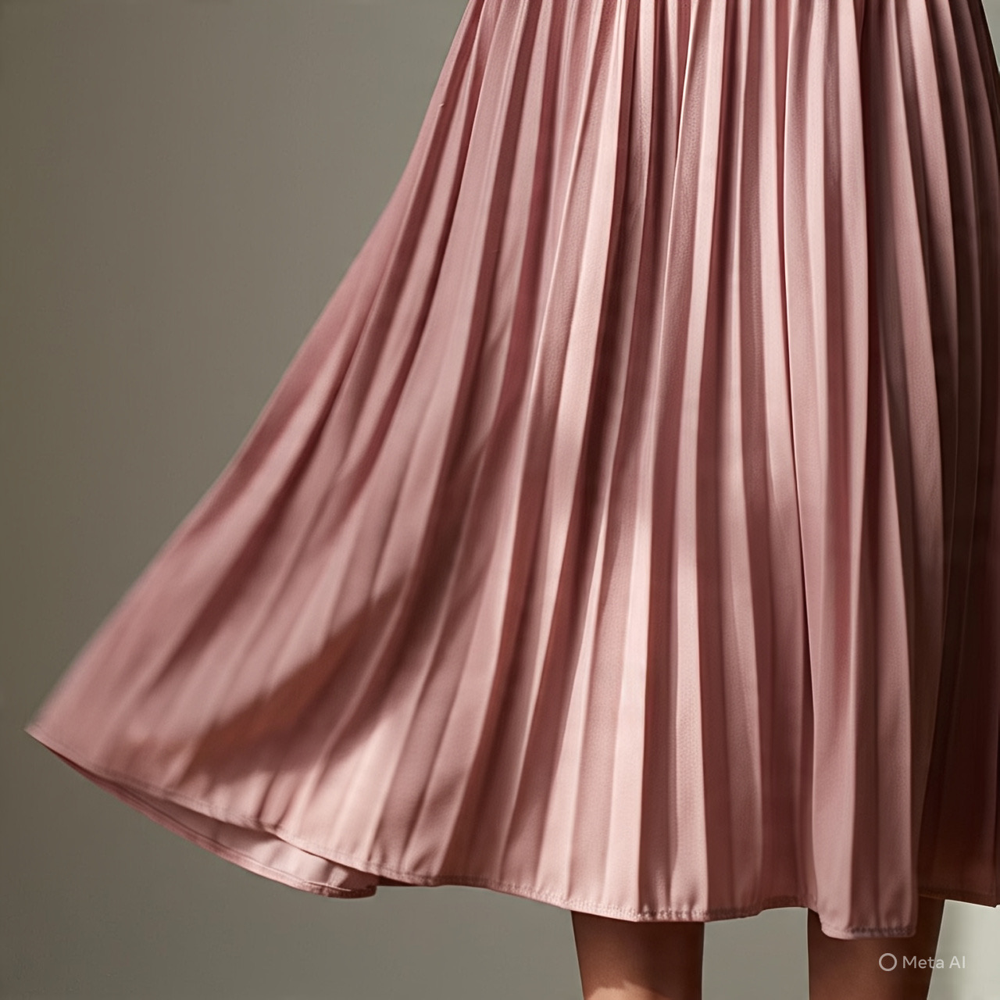
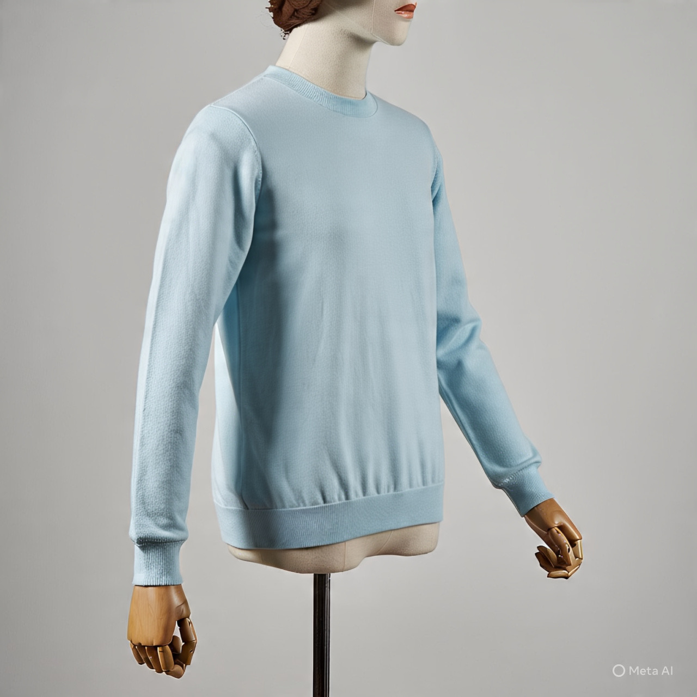
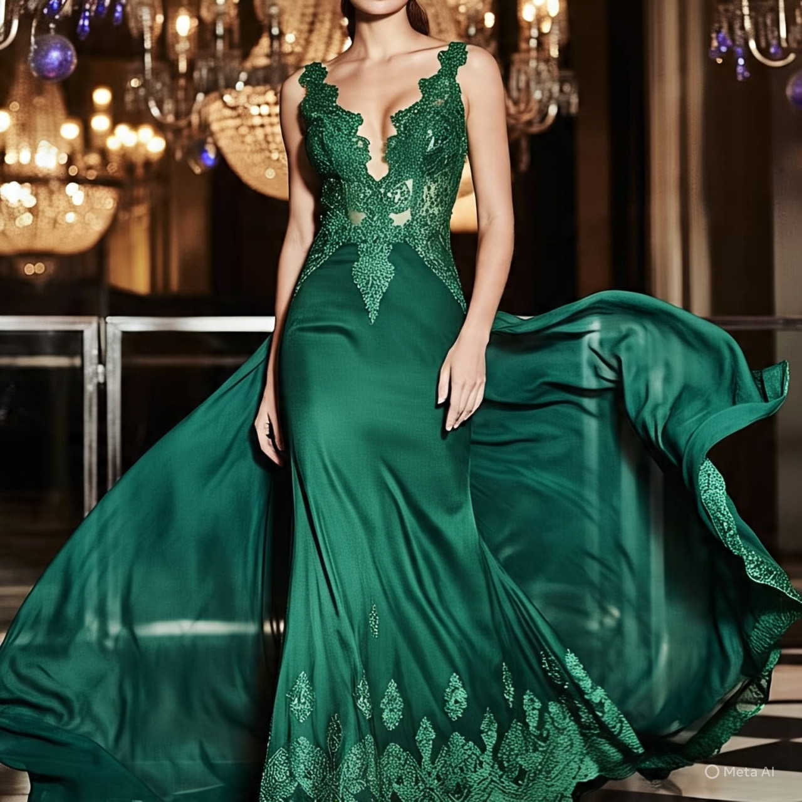
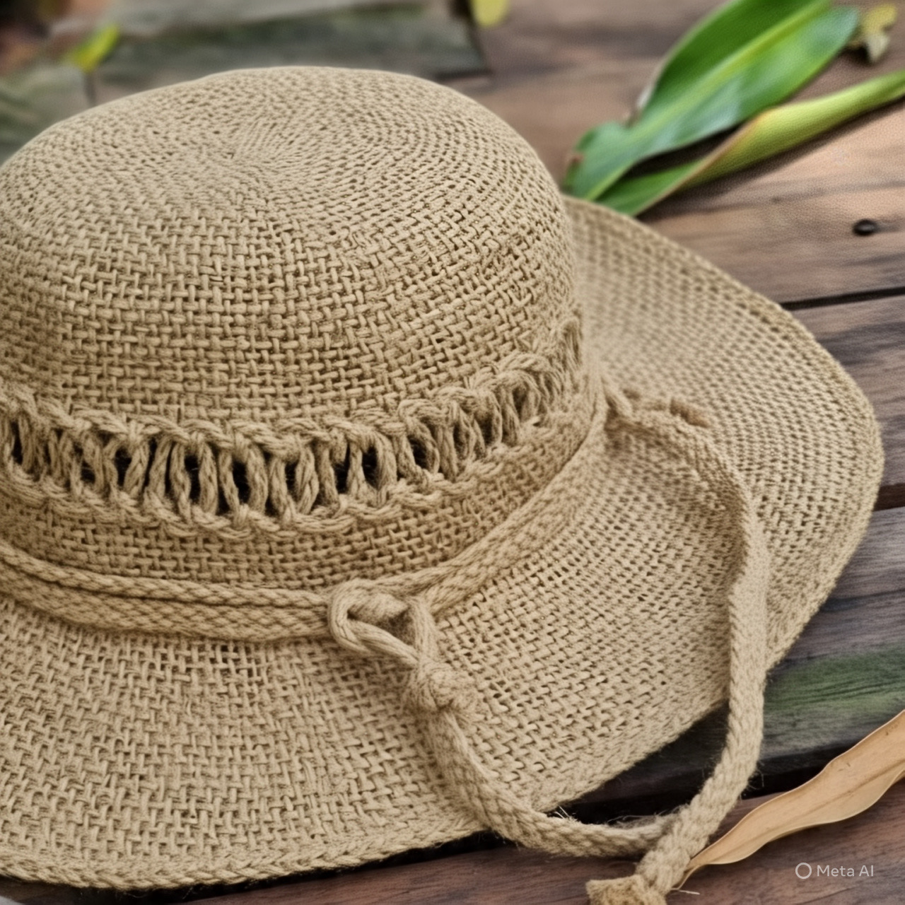
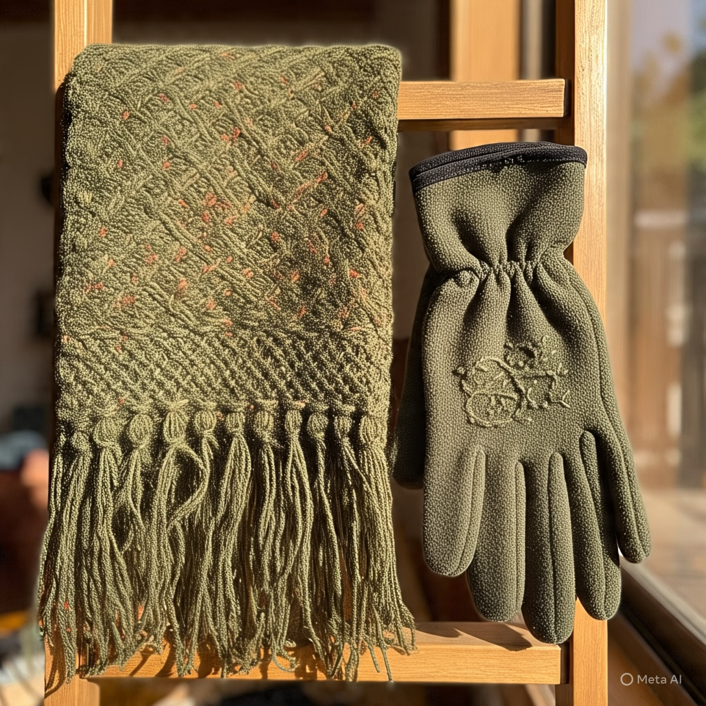
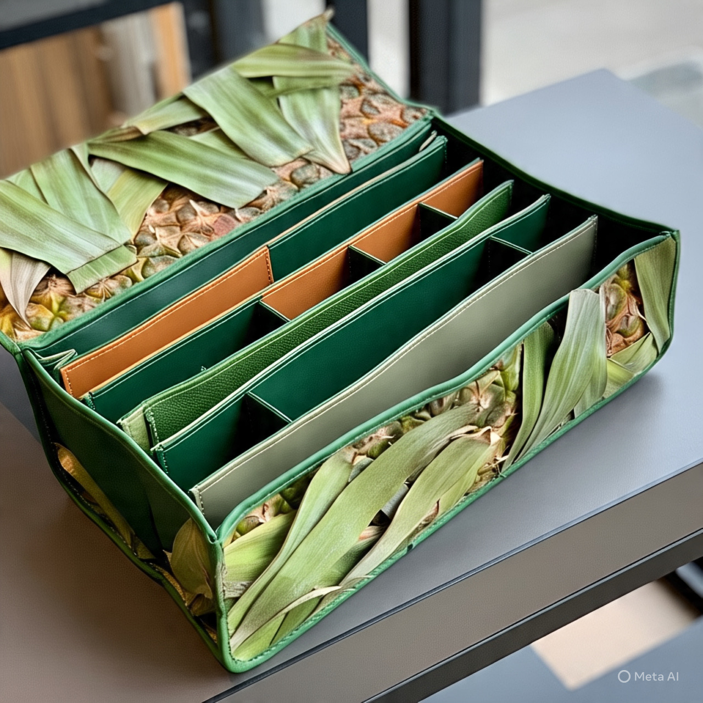
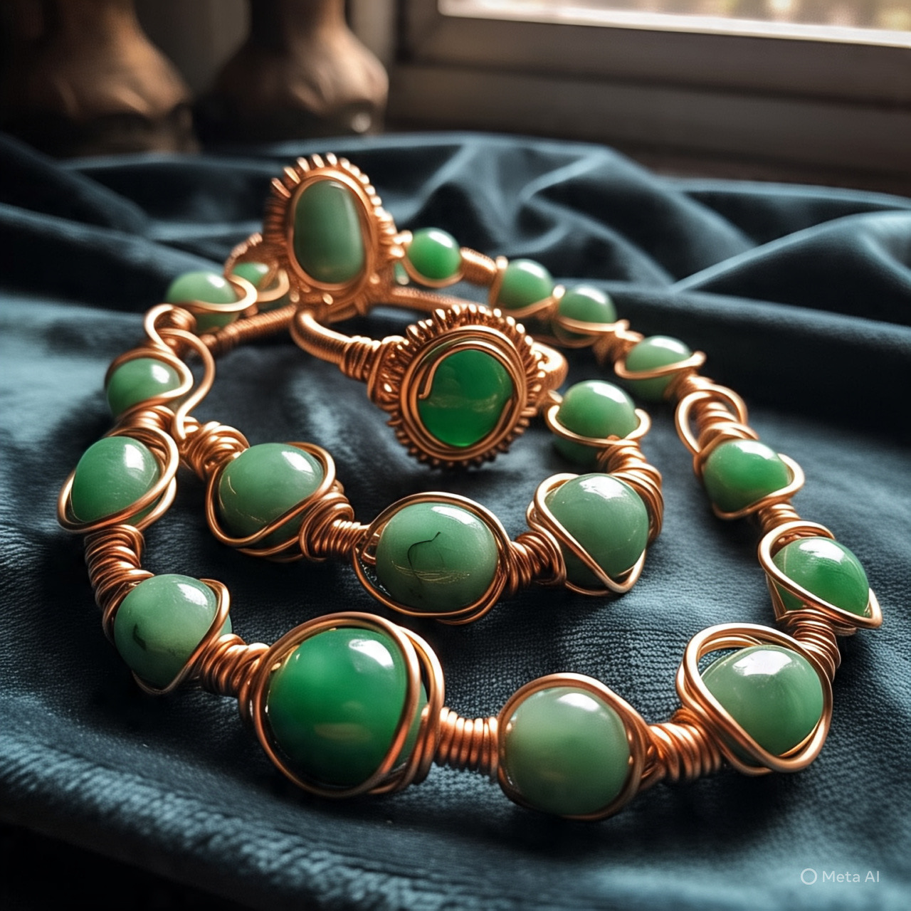
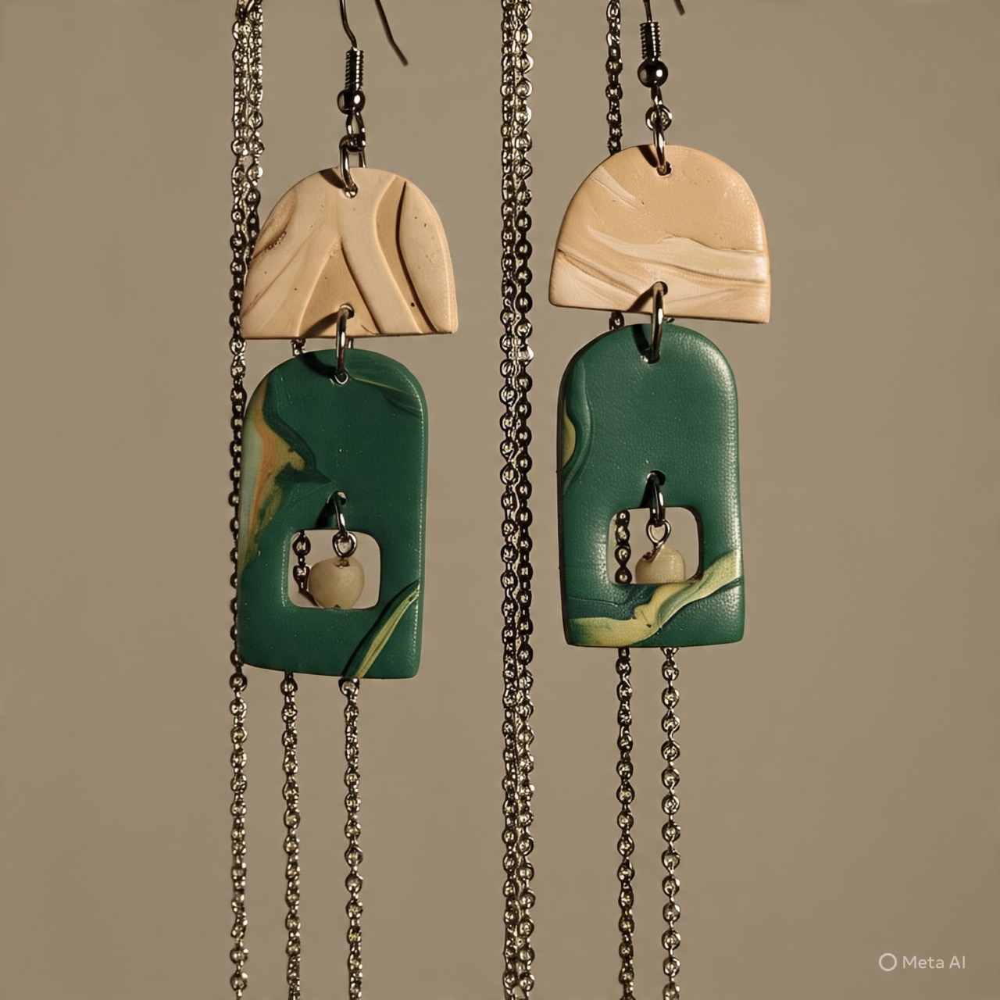
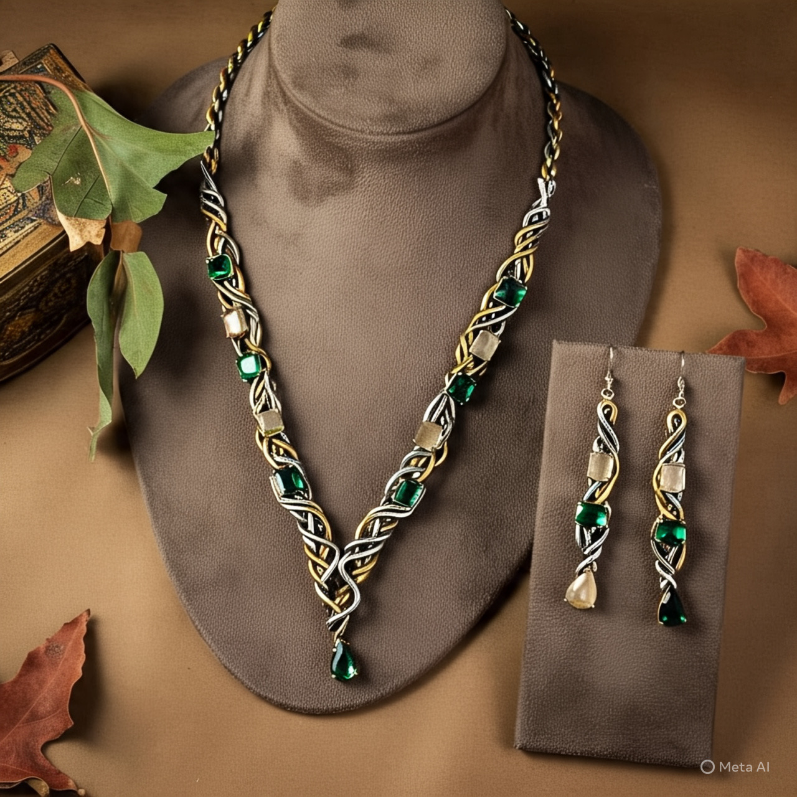

Moda con Conciencia Ecológica
En VerdeModa hemos creado un catálogo donde el estilo se encuentra con la sostenibilidad. Cada producto que encuentras aquí ha sido cuidadosamente diseñado con materiales que respetan el medio ambiente: nuestro vestuario esta confeccionado con algodón orgánico, lino natural y fibras recicladas; nuestros accesorios son elaborados con materiales reutilizados y procesos de bajo impacto ambiental y las joyas son artesanales hechas a mano con piedras naturales, metales reciclados y técnicas ancestrales
Nuestro compromiso va más allá de la moda:
- Cada prenda ayuda a reducir el desperdicio textil
- Todos los tintes son naturales y libres de químicos dañinos
- Trabajamos directamente con artesanos locales en condiciones justas
- Empaques 100% biodegradables y libres de plásticos
Vestuario

Falda Mid-Length Sustentable
- Categoría: Vestuario
- Descripción: Falda midi plisada hecha con algodón orgánico reciclado, perfecta para looks casuales o de oficina.
- Tallas: S/M/L/XL
- Material: 85% algodón orgánico reciclado, 15% elastano biodegradable
- Calificación: ⭐⭐⭐⭐☆ (4.2/5)

Polerón Unisex Básico
- Categoría: Vestuario
- Descripción: Polerón oversize de corte unisex, ideal para looks relajados y conscientes.
- Tallas: S/M/L/XL/XXL
- Material: 100% algodón orgánico con tintes naturales
- Calificación: ⭐⭐⭐⭐☆ (4.5/5)

Vestido Largo "Noche Verde"
- Categoría: Vestuario
- Descripción: Elegante vestido largo en tono esmeralda, confeccionado con seda vegetal y detalles artesanales.
- Tallas: S/M/L
- Material: Seda de bambú 70%, lino 30%
- Calificación: ⭐⭐⭐⭐⭐ (4.8/5)
Accesorios

Sombrero de Yute
- Categoría: Accesorios
- Descripción: Sombrero de ala ancha tejido a mano con fibra de yute, protección UV natural
- Talla: Talla única
- Material: 100% yute natural, forro interior de algodón orgánico
- Calificación: ⭐⭐⭐☆☆ (3.9/5)

Set Invernal Eco-Warm
- Categoría: Accesorios
- Descripción: Conjunto coordinado de guantes y bufanda en tono verde olivo, tejidos con lana reciclada
- Talla: Talla única
- Material: 80% lana reciclada, 20% fibra de bambú
- Calificación: ⭐⭐⭐⭐☆ (4.3/5)

Cartera "Leaf Collection"
- Categoría: Accesorios
- Descripción: Cartera mediana con múltiples compartimentos, hecha de cuero vegetal de piña
- Dimensiones: 25cm x 18cm x 10cm
- Material: Cuero de Piña (Piñatex®) 100% vegano
- Calificación: ⭐⭐⭐⭐☆ (4.6/5)
Joyas artesanales

Set "Armonía Verde"
- Categoría: Joyas
- Descripción: Juego de collar, aretes y pulsera con piedras semipreciosas en tonos verdes y detalles dorados
- Talla: Ajustable (collar 45cm con extensión)
- Material: Piedras de jade, hilo de cobre reciclado y baño de oro libre de cianuro
- Calificación: ⭐⭐⭐⭐⭐ (4.9/5)

Aretes "Hoja de Verano"
- Categoría: Joyas
- Descripción: Aretes colgantes con forma de hoja en resina ecológica con pigmentos naturales
- Dimensiones: 4cm de largo
- Material: Resina biodegradable, pigmentos minerales y ganchos de plata reciclada
- Calificación: ⭐⭐⭐⭐☆ (4.4/5)

Set "Esencia Verde"
- Categoría: Joyas
- Descripción: Collar y aretes coordinados con cuentas de vidrio reciclado en tonalidades verdes
- Talla: Collar 40cm con cierre ajustable
- Material: Vidrio reciclado, hilo de algodón encerado y cierres de acero quirúrgico
- Calificación: ⭐⭐⭐⭐☆ (4.7/5)